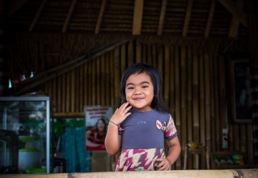
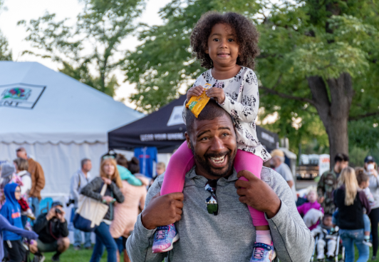
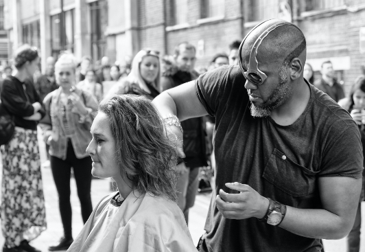
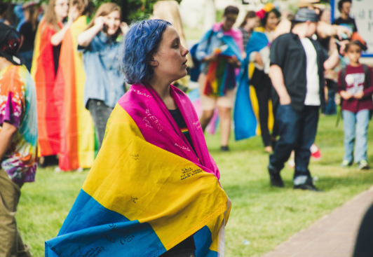

"i capture the realness behind feminism, no filter."
portfolio
moment・femRock fest・austin,texas・07|17|2018

hathai・ buri ram, thailand・05|35|2019

father・denver, colorado・06|25|2018

haircut ・new york city ・03.31.2018
black girl magic・houston, texas・01|17|2016

flag ・ LGBTQIA march ・portland , or・11|12|2017